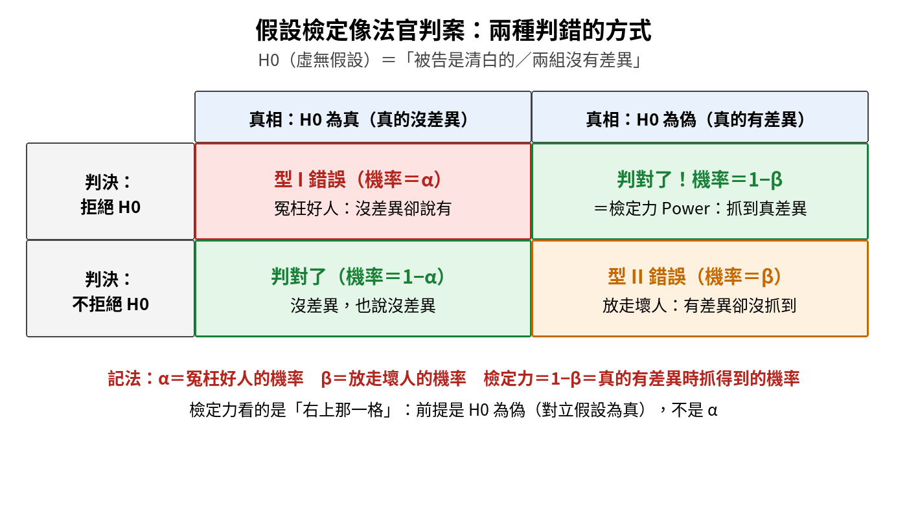
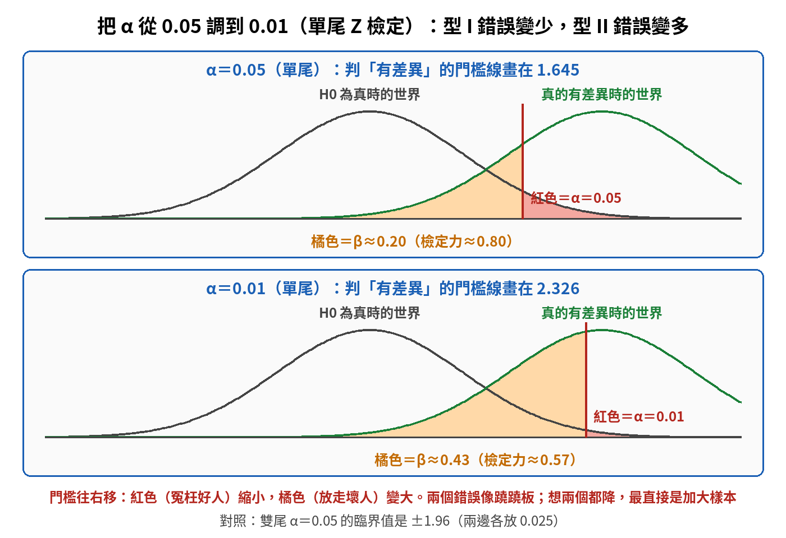
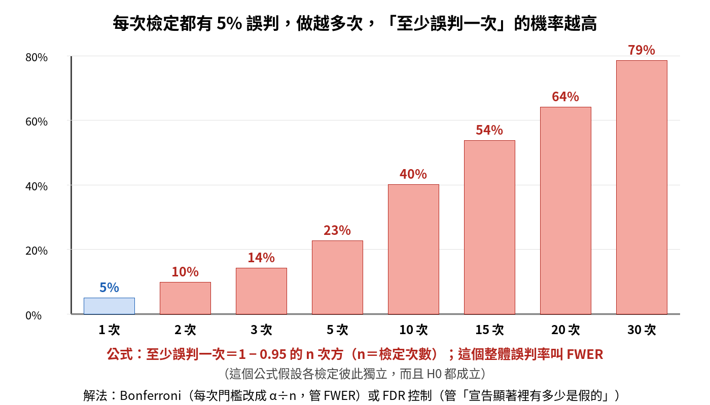
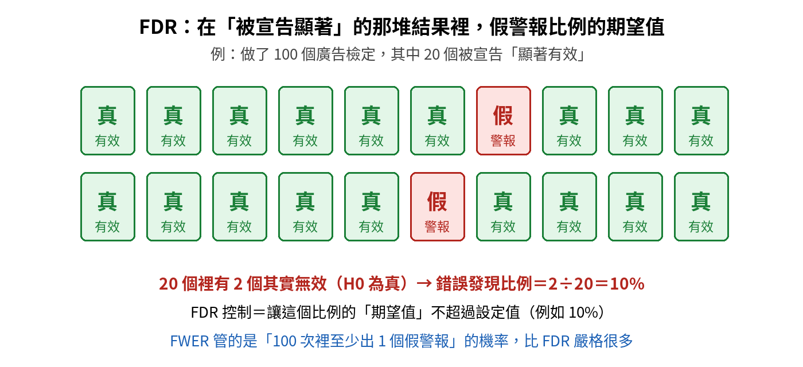
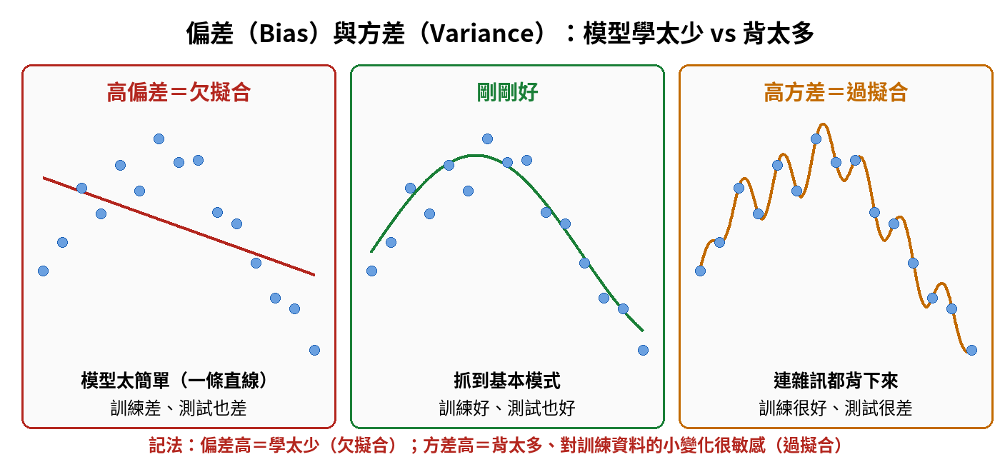
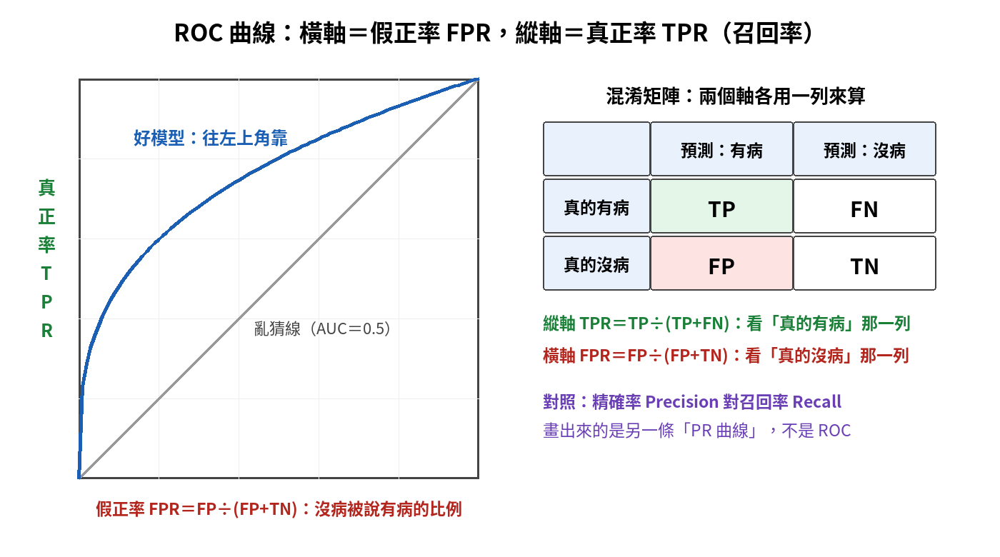
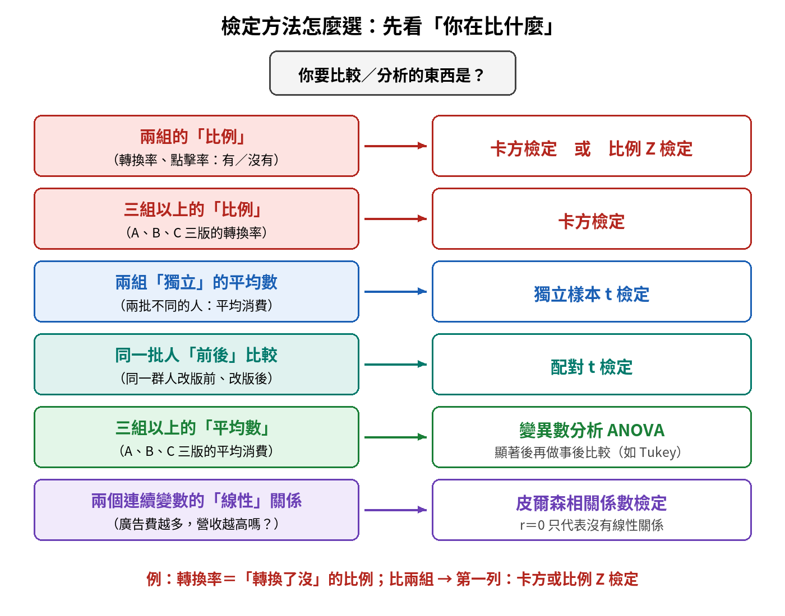
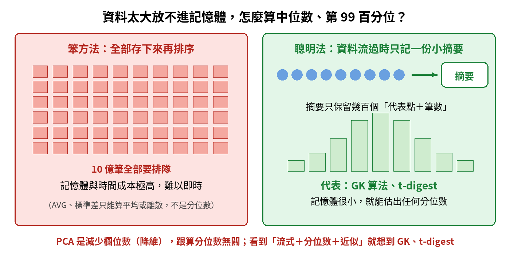
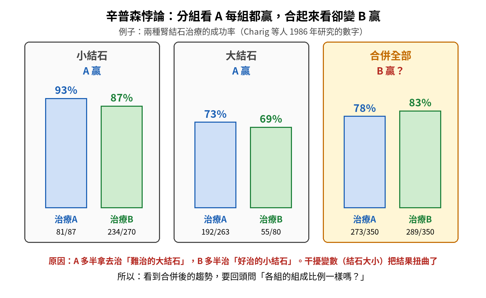

統計學在大數據中的應用｜觀念圖解複習
七個最容易混淆的觀念，每個都照「為什麼需要它 → 一步步搭起來 → 對照表 → 易錯提醒」整理。先看圖，再讀文字。
單元 ①假設檢定的兩種錯誤、α、β 與檢定力
為什麼需要這個概念？ 做 A/B 測試時，我們只看到樣本，看不到真相，所以判斷一定可能出錯。統計學不假裝自己不會錯，而是先講清楚「會錯在哪裡、錯的機率多大」，再決定可以接受多少錯誤。
一步步搭起來
- 先立一個保守的說法 H0：「兩個版本沒有差異」。沒有足夠證據之前先相信它，就像法庭上先假設被告清白。
- 真相只有兩種：H0 真的成立（沒差異），或 H0 不成立（真的有差異）。
- 判決也只有兩種：拒絕 H0（宣告有差異），或不拒絕 H0（證據不夠）。
- 2 × 2 一交叉，就出現四種結果：兩格判對、兩格判錯。

| 名詞 | 定義 | 生活比喻 | 記法 |
|---|---|---|---|
| 型 I 錯誤 | H0 為真，卻拒絕了 H0 | 冤枉好人 | 機率＝α（顯著水準，常用 0.05） |
| 型 II 錯誤 | H0 為偽，卻沒拒絕 H0 | 放走壞人 | 機率＝β |
| 檢定力 Power | H0 為偽時，正確拒絕 H0 | 抓到壞人 | ＝1 − β |
| 信心水準 | H0 為真時，正確不拒絕 H0 | 沒冤枉好人 | ＝1 − α |
α 和 β 的蹺蹺板
門檻線畫在哪裡，決定兩種錯誤的大小。α 調小，等於要更有把握才肯說「有差異」，門檻往右移：冤枉好人（紅色）變少，真的有差異時被放走（橘色）就變多。下圖是單尾 Z 檢定，所以門檻線在 1.645（α＝0.05）和 2.326（α＝0.01）；如果是雙尾，α＝0.05 的臨界值是 ±1.96（兩邊各放 0.025）。

- 在樣本數、資料變異、真實差異大小都固定時，α 和 β 一個降、另一個就升。
- 想讓兩個錯誤同時變少，最直接的做法是加大樣本；降低量測變異、改用配對設計也有幫助。樣本變大，標準誤變小：在圖這種標準化的 Z 軸上，看起來是兩座山的距離拉開；換回原本的單位看，就是兩座山變窄。不管哪種看法，重疊都變少。
影響檢定力的五個因素
| 因素 | 怎麼變，檢定力會提高 | 白話 |
|---|---|---|
| 樣本數 n | 變大 | 證據越多，越容易看出真差異 |
| 效應大小 | 真實差異越大 | 差很多比差一點點好抓 |
| 資料變異（標準差） | 變小 | 雜訊越少，訊號越清楚 |
| 顯著水準 α | 調大（例如 0.01 改 0.05） | 門檻放寬比較容易拒絕 H0，代價是型 I 錯誤變多 |
| 單尾或雙尾 | 方向猜對時，單尾比雙尾高 | α 全放在一邊，門檻比較低 |
單元 ②多重檢定：誤判會累積，FWER 與 FDR
為什麼需要這個概念？ 一次檢定冤枉好人的機率是 5%，聽起來不大。但如果同時比較 20 個廣告版本，每一次都抽一張 5% 的「誤判籤」，抽越多次，至少中一次的機率就越高。不處理的話，報告裡宣稱「顯著」的結果，很可能有幾個只是運氣。

| FWER（族系錯誤率） | FDR（錯誤發現率） | |
|---|---|---|
| 控制什麼 | 至少犯一個型 I 錯誤的機率 | 宣告顯著的結果裡，其實是假警報的比例期望值 |
| 代表方法 | Bonferroni：每次門檻改成 α ÷ n | Benjamini-Hochberg 程序 |
| 嚴格程度 | 很嚴格，把「至少一個假警報」的機率壓在 α 以下 | 比較寬鬆，容許少量假警報 |
| 適合情境 | 錯一個代價很大（如藥物上市） | 檢定數量很多、想找候選目標（如大量廣告篩選） |

單元 ③偏差與方差：模型學太少，還是背太多
為什麼需要這個概念？（「方差」Variance 台灣常稱變異、變異數，本頁沿用「方差」。）模型預測不準，原因可能剛好相反：可能是太簡單，連基本規律都沒學到；也可能是太複雜，把訓練資料裡的雜訊都背下來。兩種病的藥方不同，所以要先分清楚是哪一種。

| 高偏差（High Bias） | 高方差（High Variance） | |
|---|---|---|
| 白話 | 學太少、想法太死板 | 背太多、連雜訊都記住 |
| 正式名稱 | 欠擬合 Underfitting | 過擬合 Overfitting |
| 訓練表現 | 差 | 很好 |
| 測試表現 | 也差，和訓練落差小 | 明顯比訓練差，落差大 |
| 特徵 | 模型太簡單 | 對訓練資料的小變化很敏感、預測分散 |
| 怎麼改 | 增加模型複雜度、加特徵 | 正規化、簡化模型、增加資料 |
單元 ④分類和迴歸用不同的評分方法、ROC 曲線
為什麼需要這個概念？ 模型要先分清楚在做哪種事：預測一個數字（房價、營收）叫迴歸；預測一個類別（有病沒病、會不會流失）叫分類。考試最愛把兩邊的指標混在一起。
| 迴歸（預測數字） | 分類（預測類別） | |
|---|---|---|
| 問的是 | 差多少？ | 猜對沒？ |
| 常用指標 | RMSE、MAE、R² | 準確率 Accuracy、精確率、召回率、F1、ROC／AUC |
| 例子 | 預測房價 850 萬，實際 900 萬，差 50 萬 | 預測會流失，實際也流失，猜對 |
ROC 曲線：分類模型要先設一個門檻（例如機率超過 0.5 才算有病）。門檻一路調整，每個門檻都能算出一組（假正率, 真正率），連起來就是 ROC 曲線。越靠左上角越好；斜對角線代表亂猜。

| 軸 | 指標 | 公式 | 白話 |
|---|---|---|---|
| 橫軸 | 假正率 FPR（＝1 − 特異度） | FP ÷ (FP + TN) | 真的沒病的人裡，被誤判有病的比例 |
| 縱軸 | 真正率 TPR（＝召回率＝敏感度） | TP ÷ (TP + FN) | 真的有病的人裡，被抓出來的比例 |
| 面積 | AUC | ROC 曲線下的面積，通常介於 0.5 到 1（低於 0.5 比亂猜還差） | 隨機抽一個真的有病、一個真的沒病的人，模型給有病那位的分數比較高的機率 |
| 對照 | PR 曲線 | 精確率 vs 召回率 | 另一種曲線，常被拿來混淆 |
名詞對照：特異度（Specificity）＝TN ÷ (TN + FP)，是「真的沒病的人裡，被正確判為沒病的比例」，所以 FPR＝1 − 特異度。AUC＝0.5 等於亂猜，AUC＝1 是完美分開。
單元 ⑤檢定方法怎麼選
為什麼需要這個概念？ 每種檢定只適合一種資料，選錯方法，算出來的 P 值沒有意義。判斷方式很簡單：先看你在比的是比例、平均數，還是兩個變數的關係；再看有幾組、是不是同一批人。

| 情境 | 用什麼 | 關鍵字 |
|---|---|---|
| 兩組比例 | 卡方檢定或比例 Z 檢定 | 轉換率、點擊率、有／沒有 |
| 三組以上比例 | 卡方檢定 | A、B、C 三版的轉換率 |
| 兩組平均數，兩批不同的人 | 獨立樣本 t 檢定 | 兩組互不相干 |
| 同一批人前後比較 | 配對 t 檢定 | 改版前、改版後；同一人量兩次 |
| 三組以上平均數 | ANOVA，顯著後做事後比較（如 Tukey） | ANOVA 只告訴你「至少有一組不同」 |
| 兩個連續變數的線性關係 | 皮爾森相關係數檢定 | 一起「線性」變化嗎？ |
單元 ⑥資料放不進記憶體時，怎麼算分位數
為什麼需要這個概念？ 算平均很簡單，邊讀邊加總就好。但分位數（中位數、第 99 百分位）需要排序，一般做法是全部存下來再排。資料有 10 億筆、還一直流進來時，記憶體放不下，就要改用「近似演算法」：只記一份小摘要，用它估出分位數。

| 方法 | 它真正的用途 | 能不能算分位數 |
|---|---|---|
| AVG() | 算平均數 | 不能 |
| 標準差 | 算離散程度 | 不能 |
| GK 算法、t-digest | 流式資料的分位數近似估計 | 能，而且只用很小的記憶體 |
| PCA 主成分分析 | 降維：減少欄位數 | 不能 |
單元 ⑦辛普森悖論
為什麼需要這個概念？ 我們習慣把資料加總起來看整體趨勢，但如果各組的組成比例差很多，合併後的結論可能跟每一組都相反。這是大數據分析最常見的陷阱之一，也是「相關不等於因果」的親戚。

- 定義：在各個分組裡都看到同一個趨勢，資料合併之後，這個趨勢卻消失甚至反轉。
- 原因：有一個藏起來的干擾變數（上圖是結石大小），它同時影響「分到哪種治療」和「治療結果」，而且兩種治療在各層的比重差很多：A 多半治大結石，B 多半治小結石。
- 怎麼防：看到合併後的結論，回頭問「各組的組成比例一樣嗎？」；必要時分層分析。
總整理本章要記的十句話
- 型 I 錯誤＝冤枉好人（機率 α）；型 II 錯誤＝放走壞人（機率 β）。
- 檢定力＝1 − β＝真的有差異時，抓得到的機率。不是 α。
- α 調低 → 型 I 降、型 II 升；想兩個都降，最直接是加大樣本（降低變異、改用配對設計也有幫助）。
- 多次檢定不校正 → 整體型 I 錯誤膨脹；做了校正，副作用才是檢定力降低。
- FWER＝至少一個假警報的機率（Bonferroni）；FDR＝宣告顯著裡假警報比例的期望值（BH 程序）。
- 高偏差＝太簡單＝欠擬合；高方差＝背太多＝過擬合。
- Accuracy 是分類指標；RMSE、MAE、R² 是迴歸指標。
- ROC：橫軸 FPR（＝1 − 特異度）、縱軸 TPR（＝召回率＝敏感度）；AUC 越接近 1 越好；精確率對召回率是 PR 曲線。
- 兩組比例 → 卡方或比例 Z；三組以上比例 → 卡方；兩組獨立平均 → 獨立樣本 t；同一批人前後 → 配對 t；三組以上平均 → ANOVA（顯著後做 Tukey 等事後比較）；兩個連續變數的線性關係 → 皮爾森。
- 流式資料算分位數 → GK、t-digest；分組趨勢合併後反轉 → 辛普森悖論。